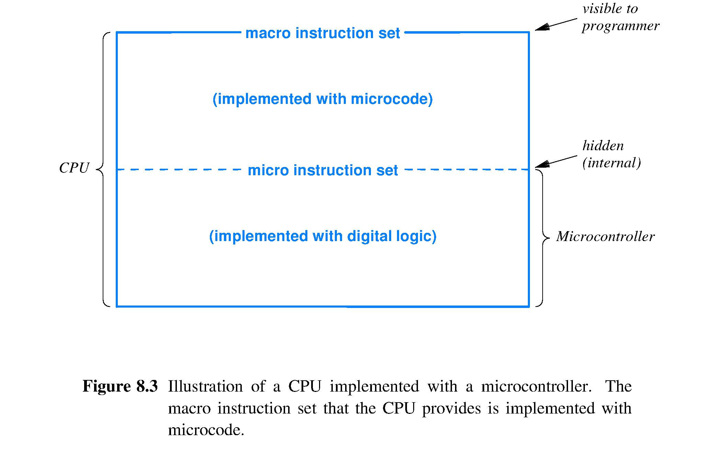

CPUs
Central Processing Unit (CPU) manages the entire computer by performing calculations, controlling I/O, and telling other processors what to do.
Modern CPUs are very complex, containing billions of transistors to achieve high performance.
- Multiple cores
- Multiple roles
- Protection and Privilege
- Hardware Priorities
- Generality
- Data size
- High speed
The hardware for CPUs have different modes of execution to handle complex operations and features. Items commonly associated with CPU mode of execution include:
- the subset of instructions that are valid
- the size of data items
- the region of memory that can be accessed
- the functional units that are available
- the amount of privilege
Modes of Execution
There are two ways the CPU can change execution modes:
- Automatic: initiated by hardware, like an I/O device
- Manual: mode changes under a running program, like the operating system
Three different mechanism are used to change modes:
- CPU includes an instruction to set the current mode
- CPU contains a special-purpose mode register to control the mode (responds to the store command by changing the mode)
- the side-effect of another instruction can change the mode (e.g. an app makes an operating system call by using an instruction from a CPU instruction set)
Privilege and Protection
CPUs can prevent unintentional or malicious changes with different levels of privilege that limit the operations that are allowed. CPUs that run apps have at least two levels of protection. The operating system has the highest privilege, and apps run with limited privilege.
Microcode
The CPU is built in two pieces:
- microcontroller: a small, fast processor
- microcode: software for the microcontroller to implement the CPU instruction set (macro instruction set)
 (Figure 8.3 from the Essentials of Computer Architecture, 2nd Edition textbook by Douglas E. Comer)
The CPU decodes a macro instruction during instruction execution, then invokes the microcode that corresponds to the instruction. Macro and micro architectures can differ.
(Figure 8.4 from the Essentials of Computer Architecture, 2nd Edition textbook by Douglas E. Comer)
Microcode defines all aspects of the macro system, including the format of macro instructions. It also defines the form and encoding of each operand.
Three advantages of using microcode:
- higher level abstraction
- building microcode takes less time than building circuits (also less prone to errors)
- new versions of CPU can be created faster since microcode is easier to change than hardware
Disadvantages of using microcode:
- more overhead than implementing hardware: macro instructions take up multiple clock cycles
- executing multiple micro instructions for each macro instruction requires the microcontroller to run faster than the CPU
- cost of macro instruction relies on the micro instruction set
Vertical Microcode
A microcontroller needs to interacts with hardware components in the CPU like
- accessing the ALU
- storing results in general purpose registers, and
- coordination with other hardware units like memory
A microcontroller has a vertical architecture if it consists of a RISC processor.
Advantages
- one micro instruction is executed at a time for vertical microcode, which is the software that runs on the microcontroller
- vertical microcode's interface is easy for programmers to understand: uses conventional looking code
Disadvantages
- hardware must operate at high speeds since only one micro instruction is executed at a time
- cannot utilize the parallelism of the underlying hardware
Horizontal Microcode
Horizontal microcode allows hardware to run faster; however, it's more difficult to program.